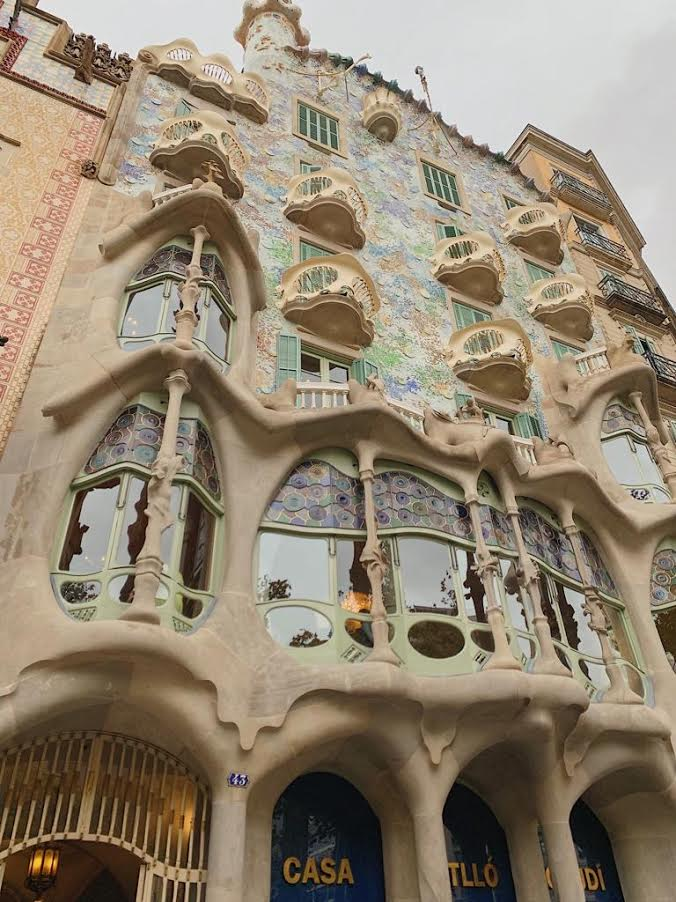

While I absolutely loved traveling every weekend, it was nice to just stay put in my favorite city. My one regret during my time abroad was not spending more time in Barcelona and traveling to other cities in Spain. My friends and I spent a total of 4 weekends in Barcelona: September 6-8, November 1-3, November 22-24, and our last weekend December 13-15. After really getting to know the city, I compiled a list of tips and trick as well as restaraunts, clubs, and anything else you can imagine. All of my recommendations will be listed below! Many of the dinner restaraunts are also open for lunch with outdoor seating which was great to chill out in the middle of a busy day. When choosing restaraunts to go to, I often used the website: Barcelona Food Experience.
Buy a metro card! While I often took taxis when it was dark out, a metro card is the cheapest way to get to the opposite side of town the fastest. Walking was another greta form of transportation, but obviously takes longer. In addition, there is no uber in Barcelona which can be very inconvenient. In liu of uber, many of us used the app Cabify.
The gym that I joined was the Metropolitan Sagrada Familia. My friends and I absolutely loved this gym. Not only was there a view of the epic Sagrada Familia, but the prices and amenities were amazing as well. We paid 248 Euros for a 3 month membership. This membership included access to all of the workout rooms as well as the equipment. In addition, The Metropolitan (or The Met as we called it) provided an indoor spa and locker room area which included a steam room, sauna, showers, hair styling tools, lockers, hot tub, tanning salon, and so much more.
There are many grocery stores all around Barcelona which was a great way to save money and practice my cooking skills! My favorite grocery store was located on the bottom floor of the famous department store El Corte Ingles. Corte Ingles was an efficient way to buy my groceries and get anything else I may need. Corte Ingles has a separate floor for each department: Women, Men, Sports, Kids, Home, Electronics, Gourmet, as well as the grocery store and pre cooked meal section that I had mentioned before.
I would say that my phone and my credit cards were two of my biggest anxieties when planning to go abroad, but I figured it out. First of all, most places in Europe often only accept Visa and Master Card so keep that in mind when planning your financials. I also purchased a Charles Schwabb debit card so I could go to any ATM to cash Euros without a large fee. Your phone really depends on the network you have and the price you want to pay. I have AT&T and the easiest and cheapest way to stay connected was by buying a SIM card once I arrived in Barcelona. I bought my SIM card from Vodaphone (they are located all over the place). I was able to Facetime, Facetime Audio, send texts with my same number, and use the internet anywhere. This definitely calmed me down throughout my time abroad! Staying connected with your loved ones at home is the best way to stay happy, healthy, and calm while abroad. Each month I had to go to the store for them to update my Internet. Tip: Make sure you write down your sim card pin number in case your phone restarts and you had to input it. IMPORTANT: DO NOT LOSE YOUR ORIGINAL SIM CARD. Keep it somewhere safe and where you will remember!
While I absolutely love Barcelona, it is not the safest place when it comes to small criminal acts. Barcelona is known for its pick-pocketing. Be sure that you never have your phone in your pocket. It takes time to get used to, but it is worth it. In addition, if you have a purse, make sure that it has a zipper or can close fully. Lastly, NEVER set anything of value on your table whether you are at a bar, restaurant, or coffee shop.
Barcelona is filled with such a rich history and some pretty incredible bucket list sites.